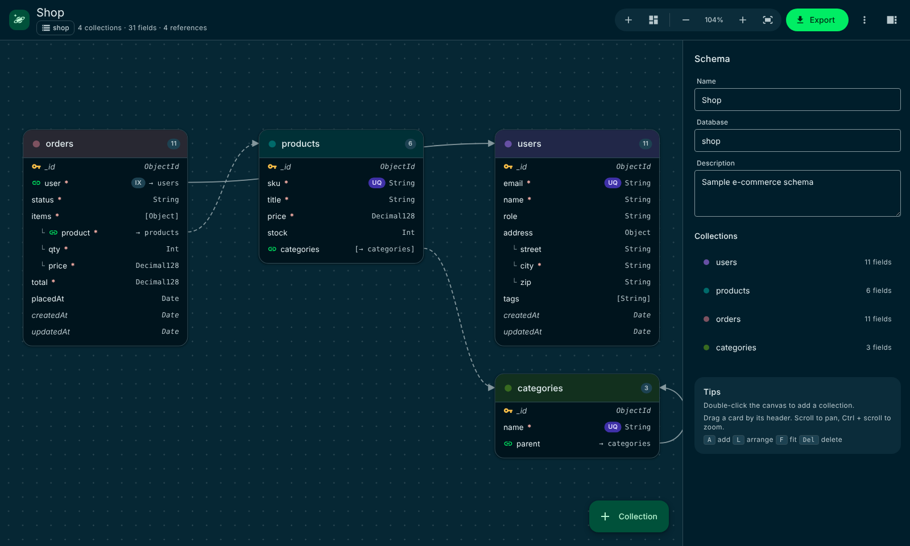

A visual MongoDB schema designer for VS Code. Draw your collections, link them together and export them to the code you need, without leaving the editor or connecting to a database.

Kosmora gives you a whiteboard for your data model and turns it into code, in one extension that never needs the internet or a database.
Drag collections onto a canvas, add nested objects and arrays, and link references. Arrows show how your data connects.
Generate JSON Schema, MongoDB validators, Mongoose, TypeScript, Prisma, Pydantic, Markdown, Mermaid, DBML, SVG and PNG.
Set types, required, unique, enums, defaults, ranges, patterns and descriptions, plus compound, text and TTL indexes, in one side panel.
Spot duplicate names, invalid field names and references to missing collections while you design.
Designs are plain .kosmora.json files. The Schema Designs view lists them all, and they diff and review well in Git.
A clean Material Design interface that follows your VS Code theme, with keyboard shortcuts, auto-arrange and zoom.
No account, no sign-up and no server needed to start designing.
Install Kosmora from the VS Code Marketplace, or from the .vsix file if you're offline.
Run Kosmora: New Sample Schema from the Command Palette, then add collections and fields on the canvas.
Click Export and pick a format, or export every format at once into a folder you choose.
A Material Design interface with light and dark themes that follow VS Code.

The schema designer: collections, fields and references on one canvas.
Keep your schema as a single .kosmora.json file in Git and generate the rest.
Kosmora runs entirely on your computer. Your schemas never leave it.

Yes. Kosmora is free to download and use for personal, educational and commercial work. It is proprietary software, so you may not republish, redistribute or modify it.
No. Kosmora never connects to a database. You design on the canvas and export files, and you decide where to use them.
It's a mongosh script that creates your collections with $jsonSchema validation and indexes. Review it, then run it yourself with mongosh against the database you choose.
In ordinary .kosmora.json files in your project, so you can commit and review them in Git like any other file.
You are. Kosmora never touches a database; it only creates files. Review generated code and scripts, and test them on a non-production copy before using them on real data. Kosmora is provided "as is", and its owner accepts no liability for data loss or other damage. See section 6 of the license.
Open an issue on GitHub. Please include your VS Code version, Kosmora version and steps to reproduce.
Install Kosmora for free, or download the user manual to read offline.